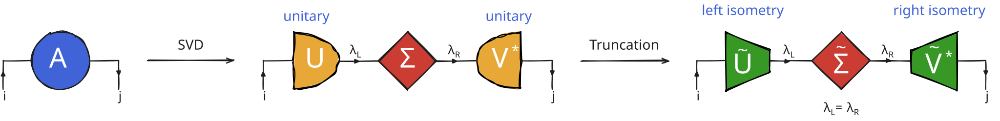
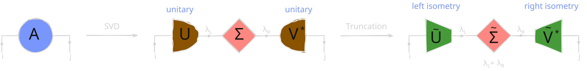
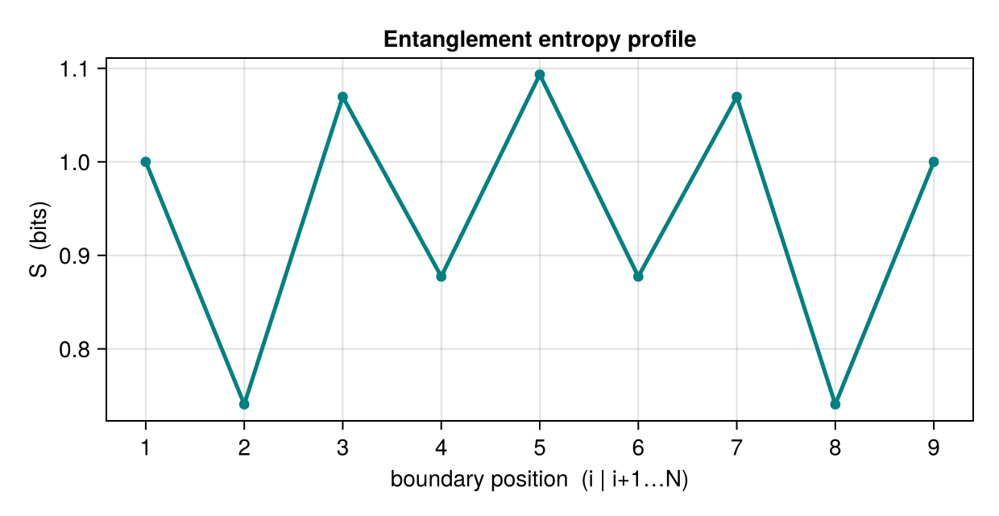
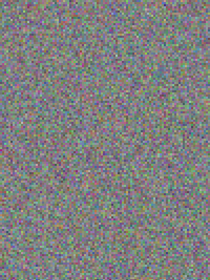
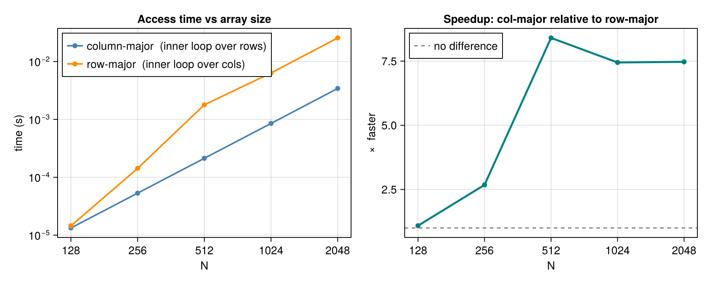
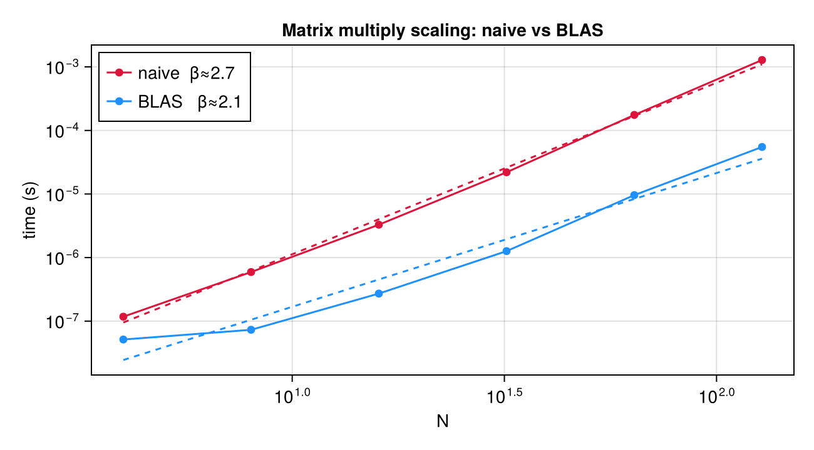

Ex 1. SVD, Schmidt Rank, and Truncation
Page info draft needs rewrite needs proofreading
| status | draft needs rewrite needs proofreading |
| last updated | 2026-07-20 |
| written by | Bavithra Govintharajah |
| edited by | Claude Sonnet 4.6 — initial draft |
Week 1 — the foundation the whole course rests on. Every later exercise — canonical forms, MPS, TEBD, DMRG — is ultimately a disciplined sequence of singular value decompositions. So Week 1 builds the intuition in miniature: SVD a matrix, read its Schmidt rank, throw away small singular values and measure what that costs, then watch the same operation act on a quantum state (where the singular values become entanglement) and on an image (where they become compressibility). The punchline that recurs for the rest of the course: a rapidly decaying singular-value spectrum means the object is compressible, and that is exactly when tensor-network methods win.
1. Julia install party
If you choose to use Julia as your programming language, try to install it on your system. This will be the language presented in the exercise class.
Verify the Julia environment and that Qritical is loaded correctly.
using LinearAlgebra, DelimitedFiles, Serialization, Qritical
using CairoMakie, BenchmarkTools
using InteractiveUtils # versioninfo() (auto-loaded by IJulia, explicit for scripts/docs)
versioninfo()
println("Qritical loaded: ", Qritical)
const DATA_ROOT = normpath(joinpath(@__FILE__, "..", "..", "..", "data"));Julia Version 1.12.6
Commit 15346901f00 (2026-04-09 19:20 UTC)
Build Info:
Official https://julialang.org release
Platform Info:
OS: Linux (x86_64-linux-gnu)
CPU: 4 × AMD EPYC 9V74 80-Core Processor
WORD_SIZE: 64
LLVM: libLLVM-18.1.7 (ORCJIT, znver4)
GC: Built with stock GC
Threads: 1 default, 1 interactive, 1 GC (on 4 virtual cores)
Qritical loaded: Qritical
2. SVD a matrix


Perform an SVD on the matrix $A$ in A.txt and find the Schmidt rank needed if singular values below $10^{-3}$ are discarded.
Load the $64 \times 64$ matrix, wrap it in a QTensor with named upper/lower indices, then call do_svd with ValCutoffTrunc(1e-3) to find the Schmidt rank when singular values below $10^{-3}$ are discarded.
A_mat = readdlm(joinpath(DATA_ROOT, "A.txt"))
println("Shape: ", size(A_mat), " eltype: ", eltype(A_mat))Shape: (64, 64) eltype: Float64
# get the number of rows and columns from the shape of the loaded array so that a leg with the correct local dimensions can be created
nrows, ncols = size(A_mat);
i_row = upper(:i, nrows);
j_col = lower(:j, ncols);
@show i_row, j_col;(i_row, j_col) = (TIx{Upper}(:i, 64), TIx{Lower}(:j, 64))
create a QTensor object with the index legs
A = QTensor(A_mat, (i_row, j_col));A QTensor is, at its core, a physics-flavoured wrapper around a plain Julia array.Think of it as a named-index tensor in the sense that tensor network practitioners use the word — a multidimensional array where each axis (called a leg) is tagged with a name and a direction.
The two flavours of direction are:
- Upper — created with
upper(:name, dim), conventionally drawn as an upward-pointing index in Penrose notation, playing the role of a "ket" or "column" space - Lower — created with
lower(:name, dim), playing the role of a "bra" or "row" space
If you're now reaching for your general relativity textbook thinking "covariant transformation laws, cotangent bundles, pullbacks..." — you can put it back on the shelf. In quantum mechanics everything lives in a finite-dimensional Hilbert space equipped with the trivial inner product (the Kronecker delta), which means the distinction between upper and lower indices reduces to a bookkeeping convention to track which legs belong to ket spaces and which to bra spaces. The full differential-geometry machinery — transformation properties, differentiability, bundles — is overkill here and simply isn't implemented.
What Qritical does give you by naming legs:
- Legibility — contraction expressions read like physics equations, not a soup of integer axis indices
- Partition safety —
do_svdknows which legs to group as "row-like" vs "column-like" without you manually reshaping anything - Early error detection — mismatched index names produce an error at the contraction site, not a wrong-but-silent result pages later
Under the hood the backing storage is a plain Array{T,N}, accessible via .data, so every Julia linear algebra and broadcasting primitive still works when you need to drop down to the raw array.
Bipartitions for a matrix — and why we keep it simple here
To run do_svd, Qritical needs to know how to fold the tensor into a matrix: which legs pile up on the left (the "row block") and which go on the right (the "column block"). This grouping is called a bipartition.
For a rank-2 tensor — an ordinary matrix — this is completely trivial: there is only one leg on each side. We write bipartition(Partition([i_row]), A) to declare that all legs in the left partition go to the "row" side, with everything else automatically landing on the "column" side.
We're deliberately not pulling out the full Partition machinery of Qritical here. The case where it really earns its keep is when you have a higher-rank tensor — like the 10-qubit quantum state ψ in part (c), which has 10 legs — where there is no single obvious "matrix view". There you must explicitly decide which subset of legs to group together, and the Partition type manages all the necessary reshaping under the hood. That's coming up in part (c).
bp = bipartition(Partition([i_row]), A)Bipartition(AbstractIx[TIx{Upper}(:i, 64)], AbstractIx[TIx{Lower}(:j, 64)])Truncating small singular values — a floating-point reality check
In exact arithmetic the SVD factorisation is perfect and U Σ Vᵀ reconstructs A without any error. In floating-point land, nothing is exact.
Matrix elements are stored as 64-bit IEEE 754 doubles, which have a relative machine precision of roughly $\epsilon_\text{mach} \approx 2.2 \times 10^{-16}$. Any singular value smaller than $\|A\|_F \cdot \epsilon_\text{mach}$ is dominated by rounding errors — it is encoding numerical noise rather than real structure in the matrix.
In practice the usable noise floor is not $\epsilon_\text{mach}$ itself but its square root, roughly $\sqrt{\epsilon_\text{mach}} \approx 1.5 \times 10^{-8}$. Here is why. The SVD algorithm (LAPACK's dgesdd) is backward stable: the computed singular values are exact for a slightly perturbed matrix $A + \delta A$ where $\|\delta A\|_F \leq c\,\epsilon_\text{mach}\,\|A\|_F$. But $A$ itself was already rounded when stored, contributing a first layer of $\epsilon_\text{mach}$ error. The algorithm then applies $\mathcal{O}(n)$ successive Givens rotations and Householder reflections; each one introduces an additional $\mathcal{O}(\epsilon_\text{mach})$ perturbation that compounds statistically as $\mathcal{O}(\sqrt{n}\,\epsilon_\text{mach})$. For matrices of modest size the combined effect lands near $\sqrt{\epsilon_\text{mach}}$ as a practical threshold — below which a singular value is more likely amplified round-off than a genuine matrix feature. The same logic in single precision gives $\sqrt{\epsilon_\text{mach,32}} \approx 3.5 \times 10^{-4}$ as its noise floor.
Our choice of ValCutoffTrunc(1e-3) is far above even this practical noise floor — we are not just cleaning up rounding artifacts, we are doing genuine rank reduction: deliberately asserting that the matrix is well-approximated by a simpler, lower-rank object and discarding the rest. The F.ε field in the output tells you exactly how much information you have thrown away by doing this.
F = do_svd(A, bp, ValCutoffTrunc(1e-3))ReducedSVD([0.0 0.0 0.0 0.0 0.0 0.0 0.0 0.0 0.0 0.0 0.0 0.0; -2.2722495248984083e-19 -8.1051359568479105e-19 2.3966955370882183e-19 4.375929408727366e-18 -7.378698271818511e-18 1.1213180852689872e-17 -1.1102230246251565e-16 1.0111465181938214e-17 -2.788763584972375e-17 0.019243305691616926 2.9002263267376537e-18 4.687461185019791e-17; 8.366173126822392e-19 -2.768791016367261e-19 -1.4184169740130645e-18 -5.9981360973360586e-18 4.5623859334113645e-17 -6.523561484480982e-17 0.0 -1.3229360488841636e-17 9.784185295996514e-17 -0.10820855546951419 -6.930819842833597e-17 6.785063567603669e-17; 8.341008997756768e-19 0.010361312641172618 2.3384616076383784e-9 -1.9332719528898453e-17 9.316459566185867e-7 0.06452351361596195 0.0 -6.1517941697362186e-18 2.185604420296763e-16 -6.007112011897443e-19 0.003730095996923804 0.08299128245638271; -2.617731289270928e-18 6.338004522530051e-18 3.987026049217382e-18 8.887508048130742e-18 -1.0677701612212572e-16 6.531592941378912e-17 -2.2014161152960422e-18 2.5225029383920473e-17 -1.44135476846037e-16 0.3034336236306483 2.2604658553174946e-16 -9.648828171006312e-17; -2.745277224377799e-18 -0.04453812012063732 -1.0051881222179662e-8 7.060777120881825e-17 -3.0368835178441487e-6 -0.21032710293416954 -8.250683881754918e-31 6.664831754453513e-17 -6.722300799535662e-16 1.1102230246251565e-16 -0.009443751575310234 -0.21011498231703316; 3.674302102468475e-18 0.08706586218347709 1.9650037041962776e-8 -5.666554511968546e-17 2.3864958947733932e-6 0.16528285158963235 1.5636989739330982e-30 -2.468038519003845e-17 3.241533298215761e-16 -3.0100162813628817e-17 -0.005713250645256544 -0.12711469046251808; -0.03609001181097693 1.9627663024799097e-17 0.0 0.07902708709817302 0.0 -1.7492396755842932e-17 0.0 0.0799733330436151 0.19170090019129116 -5.1878344380131115e-18 -3.137952137716171e-16 6.457779189866786e-18; 4.582281707249617e-18 5.1536660884503836e-20 -6.768706998795395e-18 -3.444725315367115e-18 2.220446049250313e-16 -4.637868042435798e-17 3.916038267065706e-18 -2.900891967976926e-17 1.5694906059979914e-16 -0.5399425088552018 -2.45029690981724e-16 4.126337943208269e-16; 6.5115293860704815e-18 0.09548546689513693 2.1550271297314763e-8 -1.2902714107882425e-16 5.423370860580949e-6 0.3756093622089887 1.7532633356692108e-30 -5.164296351938425e-17 2.35584169188217e-16 -4.0870987037734246e-17 0.01620374631075966 0.36051878773009; -1.4720691469450892e-17 -0.24620672635321045 -5.5566799018302836e-8 1.1452231921817466e-16 -4.3557937895458425e-6 -0.30167159304827373 -4.390742171911913e-30 -3.5420482634451484e-17 -1.57604902225416e-16 3.0207031938587705e-17 0.013545147260301427 0.3013673490226719; 0.11792421879787973 -1.0515649342366122e-17 2.20586105682667e-24 -0.21790655659048058 -6.628224166444006e-18 -1.1719584998620003e-16 0.0 -0.16229471420575714 -0.38903021326578485 1.422899571601619e-17 3.024619129373546e-16 -2.564384439227412e-16; 1.6181717424346154e-17 0.25595794118524434 5.7767566652793356e-8 -6.938893903907228e-18 3.061099211959575e-7 0.021200422250034514 4.5097714479551306e-30 6.98852474066041e-18 4.71999263099447e-16 -1.0254017817102644e-17 -0.009474539459825954 -0.21079998506821565; -0.17430719991533297 1.799342445645304e-17 -3.261785020241376e-24 0.20839155793731612 1.216744858027522e-17 8.202328248031743e-17 0.0 0.006424184935823248 0.16235525109777213 -1.3350101441754328e-17 4.97765264201094e-17 -1.728904756675864e-17; 0.13333929471746156 -1.2189202407992539e-17 2.491982101733704e-24 0.046787332790441574 -7.483451695690876e-18 5.551115123125783e-16 0.0 0.2790331067097792 -0.15750125933651432 -3.7324658111632735e-18 5.267097713265638e-16 2.6923833763742146e-16; 2.3703918205805477e-17 -3.1692094288430925e-8 0.14042210280410544 -7.162060615729135e-19 0.19434586550942767 -2.806132673727202e-6 1.0959288192730182e-23 -1.214306433183765e-16 2.181414771040835e-16 7.626963025085366e-16 0.2499710836381425 -0.011235109409417618; -5.401999300757165e-18 9.580985703947386e-18 8.353975961159578e-18 -7.27918490175974e-18 -2.255335644033446e-16 -5.068645156369733e-17 -4.629264800096013e-18 -1.3877787807814457e-17 -2.220446049250313e-16 0.6384024837329763 4.207358431323266e-16 1.9403364887580522e-16; -7.85741060796841e-18 -0.12428880418927356 -2.8050943631440648e-8 1.543854788723846e-16 -6.2691312334204154e-6 -0.43418465097131786 -2.271667183557577e-30 1.4936150030092465e-16 1.5265566588595902e-16 4.9550045537316567e-17 -0.019495024294939642 -0.43374676391429606; 2.241365877313534e-17 0.3551585339349213 8.015631078447004e-8 -1.0686576516932142e-16 4.344811826888284e-6 0.3009110092532321 6.3087673611119844e-30 9.064008247828642e-17 -1.2247304970887092e-16 -3.688953759783487e-17 -0.01412304806436665 -0.3142251223618814; -0.18296375339539162 1.6429226374523543e-17 -3.4138725923767834e-24 0.3027846557679107 -8.440187048716901e-18 1.2100788788919925e-16 0.0 0.19731226549059316 0.3899861134986848 -1.9692877878280897e-17 4.141652298894627e-16 -5.551115123125783e-17; -3.045574825587322e-17 -0.48225371850231186 -1.0884063099638439e-7 -4.651235142186592e-17 1.8961801062904594e-6 0.13132478281008125 -8.465439682725979e-30 1.1102230246251565e-16 4.144847392574913e-18 1.1818253853698427e-17 0.0058965231167955896 0.13119233818651116; 0.353553390593274 -3.2681092934744963e-17 6.607672555548153e-24 -0.3535533905932736 -6.526557216481367e-18 -1.6140873109151745e-16 0.0 3.9898639947466563e-16 1.980556342889762e-15 2.2408796510043725e-17 4.836949517600691e-16 2.9921359452419354e-17; -0.3003693992252774 2.6843850160015285e-17 -5.617139516238625e-24 -0.16454838721873138 2.4631922248066776e-17 -3.827420039761621e-17 0.0 -0.4581334100499866 0.21032931120525278 1.2405738536309006e-17 -1.7765805846215133e-16 -1.1776232477637227e-17; -3.280103059644265e-17 7.692562779595577e-8 -0.34084394466644696 -4.571038879052461e-18 -0.3577301491615316 5.165215412825815e-6 -2.6599445724729e-23 7.907759802539293e-17 -1.1560530397359442e-16 6.579450229960481e-16 -0.357369368553851 0.016062193661924615; 2.0172346610823532e-17 0.3196254130593767 7.213678257971036e-8 9.911190669325742e-17 -4.018175583938074e-6 -0.278288984310899 5.57553880975477e-30 2.7202227979450408e-17 4.058738343125958e-17 1.897836521584541e-18 0.00944122804815051 0.21005883610645854; -0.2715601175204497 2.427569558165567e-17 -5.059984000011823e-24 0.17644375228911985 -2.7265210184665044e-17 9.735853833819882e-17 0.0 0.002602860550402279 -0.33798497155907753 -1.078536714081415e-17 8.223930115843718e-16 -8.866337817881192e-17; 0.3054742396752299 -3.129450507065771e-17 5.707308205493107e-24 0.2744588823216259 -1.5308079519591822e-17 8.404711206951658e-17 0.0 0.1375168733149568 -0.06313407537834881 -1.9857628533050696e-17 3.605640721039095e-16 -7.354916159626602e-17; 2.4748938800720867e-18 -9.068686544340813e-8 0.401817571964749 -6.8354763839940845e-18 0.18361865339778222 -2.651243963770035e-6 3.1356601755102394e-23 6.18462351544703e-17 -1.8887863367948735e-17 -8.690233436268968e-16 0.02765785886124917 -0.0012431000650708788; -0.14447180565756026 1.3251374297843883e-17 -2.697674558933343e-24 -0.2245897612505833 6.278147580428086e-18 -6.347382784542376e-17 0.0 0.25416688307018676 0.05674653370549902 1.5801913729564576e-17 -3.057101725329679e-17 3.650266184215807e-17; 1.6302493424205687e-17 6.106518937545072e-8 -0.2705691284729995 -1.3731443923195846e-18 0.1761345800133097 -2.5431824786125834e-6 -2.1108277473865423e-23 2.1348596639703744e-17 1.0747857457428512e-17 -1.3402445406384924e-15 0.1759569434876799 -0.007908496785542401; 2.4252437258051524e-17 -2.0445370235883496e-8 0.09058984381733681 1.4677699985484916e-17 -0.29581772188185795 4.271270565465384e-6 7.063823165613707e-24 -2.8692769767526615e-17 1.3607698506286037e-16 -1.5763863348001635e-17 0.3089064773197336 -0.013883998178721515; 5.995788752908454e-18 1.2126747723485523e-17 2.834316716784766e-19 -1.9694675928485448e-17 -6.94786505436452e-17 -2.994516470320149e-17 0.4435684791036789 -2.117782438365551e-17 -2.4778273338173286e-17 -7.054519285782941e-17 -6.853279695563637e-18 1.5860838460570548e-16; 3.7674739447015036e-18 -7.972201334416763e-18 -5.7985126135561125e-18 7.303556383250704e-18 1.5719994051331483e-16 2.2984212137184574e-17 3.2161364706230873e-18 2.871310198411567e-17 1.7665803541894354e-17 -0.44356847910367897 -2.9195164259919023e-16 -6.247548099498608e-17; 5.721438503244922e-18 0.09058984381733663 2.044537011259006e-8 -1.0506807792120238e-16 4.271270565415293e-6 0.2958177218818585 1.6518107255913582e-30 -7.653044990725449e-17 -2.798497979491316e-16 -3.4868181870575896e-17 0.013883998178721399 0.3089064773197297; -1.707400114103626e-17 -0.2705691284729992 -6.106518942478194e-8 6.253326979011626e-17 -2.5431824786526544e-6 -0.17613458001331048 -4.7963572695355665e-30 -1.832763978231439e-17 3.174744625285449e-16 2.57935946844003e-17 0.007908496785542053 0.17595694348768082; 0.14447180565756032 -1.2871319926577672e-17 2.7064802419568804e-24 -0.22458976125058305 -1.5804324664851012e-17 -1.0487834558275719e-16 0.0 -0.14113136164165951 -0.2188673394967222 1.4571159286480213e-17 -1.382175230464984e-16 1.268078701746657e-16; 2.534767974350368e-17 0.40181757196474865 9.068686544065872e-8 6.560982875431954e-17 -2.651243963765285e-6 -0.18361865339778172 7.039901719097446e-30 2.1527246526766054e-17 -1.285191677056552e-16 -7.059382042839198e-18 0.001243100065070368 0.027657858861243046; -0.3054742396752299 3.208622599807296e-17 -5.7102384108727495e-24 0.2744588823216257 7.704500904313192e-18 1.165403507092208e-16 0.0 0.011689532862235619 -0.15086469680366985 -1.7266584271242952e-17 1.8336738750600793e-16 4.607546922934126e-17; 0.27156011752044945 -2.6735190676995164e-17 5.0702746469041715e-24 0.1764437522891198 -5.370106249312627e-18 3.94828666969812e-17 0.0 0.3162368979755835 -0.11930984972590208 -1.3086380036050511e-17 -2.891377243998174e-16 2.659504803709566e-17; 2.1085455030951198e-17 -7.213678262202072e-8 0.3196254130593767 -8.54706793702008e-18 0.27828898431089877 -4.018175583959881e-6 2.494180358350668e-23 -7.637957754995659e-17 -7.444885003375224e-17 1.0506426082543157e-15 0.21005883610645315 -0.00944122804815036; -2.1498923155142937e-17 -0.3408439446664468 -7.692562770484639e-8 -1.2751321618676596e-16 5.16521541288972e-6 0.3577301491615308 -5.9345940285368944e-30 -7.020835440299989e-18 -2.450559646082097e-19 -4.153572393477752e-18 -0.016062193661924778 -0.35736936855385387; 0.30036939922527733 -2.733172369647091e-17 5.5961462701302994e-24 -0.1645483872187314 3.1687571630308915e-17 -9.064095876834483e-17 0.0 -0.038943334173985544 0.5026012905669063 9.86146330807485e-18 4.794557547787652e-16 -1.1884695774948843e-16; -0.35355339059327384 3.30320174931717e-17 -6.600215487080362e-24 -0.3535533905932739 6.733731036401665e-18 -1.0016300876975145e-16 0.0 -7.959078093933268e-16 -1.0753817104234724e-15 2.540935874146268e-17 7.826364025476467e-16 -4.5544841768141746e-17; 1.2068111063787341e-17 1.0884063094211606e-7 -0.4822537185023119 5.431370735908908e-18 -0.13132478281008025 1.896180106350049e-6 -3.763059831507817e-23 -8.390774500773688e-17 5.785593207081436e-17 9.45684841153055e-16 0.1311923381865066 -0.005896523116795872; 0.18296375339539137 -1.8043310651939934e-17 3.417998704889365e-24 0.302784655767911 -1.1531260913284618e-17 8.876719805439432e-17 0.0 -0.4341565518442509 -0.05029301467946027 -2.1253079696185174e-17 2.7618607193593065e-16 -7.767679960323654e-17; -2.898215192444769e-17 -8.015631067751857e-8 0.35515853393492147 3.755258464563275e-18 -0.30091100925323233 4.344811826840998e-6 2.7706736276483604e-23 2.5339629800859837e-17 -2.949473306583263e-17 3.501694936402306e-16 -0.31422512236188627 0.014123048064367089; -3.6460829679143963e-17 2.805094379331423e-8 -0.1242888041892738 -4.5145820953182844e-18 0.4341846509713163 -6.269131233377317e-6 -9.691697483062343e-24 7.100418489471307e-17 -5.764745760145347e-17 2.979977920232967e-16 -0.43374676391429867 0.019495024294939517; -1.0676096780969038e-17 -3.282761298386356e-18 -7.756081468391757e-20 6.557371570793004e-18 2.1395784720083614e-17 -1.4020457159807613e-17 -0.6384024837329754 -1.7349693051308303e-17 1.604955390444961e-17 6.574050519518481e-18 1.3998132183442666e-17 1.360083709669081e-16; 8.873577285009058e-18 0.14042210280410558 3.169209419991471e-8 6.911671802708274e-17 -2.8061326737880515e-6 -0.19434586550942776 2.436421156531358e-30 -2.953788740108255e-17 7.072313940735946e-18 3.5494646137662324e-18 0.011235109409417788 0.24997108363814546; -0.13333929471746167 1.2299412056689577e-17 -2.4926182201404877e-24 0.04678733279044159 3.534592250035014e-18 3.1572295103202796e-17 0.0 0.051302721796019794 -0.31628176056962226 -2.6035051216632047e-18 2.699710265646303e-16 8.020273472883755e-17; 0.17430719991533292 -1.5570913761207792e-17 3.2545368485186445e-24 0.2083915579373162 -4.861174873827922e-18 5.0098657015201313e-17 0.0 -0.1545619641643869 0.05011084657793005 -1.4831314412887257e-17 6.849490562193511e-17 1.9392952637018823e-17; -1.9635694580045982e-17 -5.776756658990427e-8 0.25595794118524456 -1.833731175202239e-18 -0.021200422250033626 3.0610992120462316e-7 1.9970279016390937e-23 5.376533078789365e-17 -1.3685575429769047e-17 1.3010178251776542e-15 -0.2107999850682182 0.009474539459825513; -0.11792421879787962 1.0430376256483749e-17 -2.200237277449891e-24 -0.2179065565904811 2.086027944135979e-18 -5.758353578596523e-17 0.0 0.42115133925688825 0.017765993776851757 1.523665205687847e-17 -6.147826227917965e-17 6.98687720349072e-18; 2.7759848900854163e-17 5.556679894321288e-8 -0.24620672635321048 -6.4989196642516656e-18 0.3016715930482743 -4.355793789531008e-6 -1.920544206085849e-23 5.504814613607177e-17 1.3584908742829592e-16 7.926266841196355e-16 0.3013673490226723 -0.013545147260302037; 2.7114011772914438e-17 -2.1550271433819354e-8 0.09548546689513734 1.5001985857278978e-17 -0.37560936220898883 5.42337086058123e-6 7.445231410699216e-24 5.863419222732275e-17 1.0651376713888e-16 -6.936944518184816e-16 0.3605187877300871 -0.01620374631075968; -2.5042556301273352e-18 -1.40503091840725e-17 -2.215057720962224e-19 7.329579827401219e-18 3.9523608619421644e-17 -2.258301913153484e-18 0.5399425088552031 6.8254820112934035e-18 -2.7536642808707847e-17 8.815982520090753e-17 9.318957198720458e-18 -5.371378763440582e-17; 0.03609001181097676 -3.2994877482132438e-18 6.741708249951852e-25 0.07902708709817302 -2.6210447174087096e-18 2.2076541747697004e-17 0.0 -0.2075291021089833 -0.008754479430337277 -5.497506500533014e-18 7.340232064314694e-17 -1.543784814875174e-17; -1.2300912763777967e-17 -1.9650036891600673e-8 0.08706586218347699 5.0283105251641e-18 -0.1652828515896333 2.3864958950533935e-6 6.791594421145805e-24 -7.999611410997947e-17 -5.73857102919663e-18 3.81183638046228e-16 -0.1271146904625184 0.005713250645254787; -1.661984799601465e-17 1.0051881295428685e-8 -0.04453812012063738 -1.2058694734879235e-17 0.21032710293416934 -3.036883517916709e-6 -3.472117287241448e-24 -5.30686937673218e-17 -7.058352711706862e-17 1.8706156688120744e-16 -0.21011498231703343 0.00944375157531031; 2.1014238462329002e-17 5.868512289470967e-18 2.018588116955218e-19 -1.2505211813443633e-17 -4.2933591024456966e-17 3.096239316879916e-17 -0.3034336236306489 1.4457082186674482e-17 -4.037685759811908e-17 -3.0922029495767e-17 -2.5365095604723965e-17 -1.905393959800357e-16; 7.326120977959295e-18 -2.3384616400649834e-9 0.010361312641172666 2.8464255445351867e-18 -0.0645235136159623 9.316459566315278e-7 8.075783207496542e-25 4.5795317999207074e-17 3.9228877923957107e-17 -6.79630332733708e-17 0.08299128245638158 -0.0037300959969238123; -1.0470330691029515e-17 2.1926871881733377e-17 -2.1140237639543723e-20 2.6761209572739736e-17 5.954775581303621e-17 5.820425701142625e-17 0.10820855546951524 6.811338996178705e-18 7.712679434913826e-17 -8.409946930933326e-17 -8.083662494409261e-18 -1.3602577705269342e-16; 9.908723742656347e-18 -1.6090476796770615e-17 4.2606776457347447e-19 1.3252098328772981e-18 -1.6579217175820947e-17 3.266547784762379e-17 -0.019243305691617477 8.052130418429569e-18 6.11365381805985e-17 -1.6863271678770985e-16 9.218797636840545e-18 -1.8920598139062997e-17; 0.0 0.0 0.0 0.0 0.0 0.0 0.0 0.0 0.0 0.0 0.0 0.0], [0.8993622651407731 0.0 0.0 0.0 0.0 0.0 0.0 0.0 0.0 0.0 0.0 0.0; 0.0 0.3005501045336419 0.0 0.0 0.0 0.0 0.0 0.0 0.0 0.0 0.0 0.0; 0.0 0.0 0.3005501045336419 0.0 0.0 0.0 0.0 0.0 0.0 0.0 0.0 0.0; 0.0 0.0 0.0 0.10043824255962522 0.0 0.0 0.0 0.0 0.0 0.0 0.0 0.0; 0.0 0.0 0.0 0.0 0.012703617265554058 0.0 0.0 0.0 0.0 0.0 0.0 0.0; 0.0 0.0 0.0 0.0 0.0 0.012703617265553956 0.0 0.0 0.0 0.0 0.0 0.0; 0.0 0.0 0.0 0.0 0.0 0.0 0.004245312089583863 0.0 0.0 0.0 0.0 0.0; 0.0 0.0 0.0 0.0 0.0 0.0 0.0 0.004245312089583856 0.0 0.0 0.0 0.0; 0.0 0.0 0.0 0.0 0.0 0.0 0.0 0.0 0.004245312089583829 0.0 0.0 0.0; 0.0 0.0 0.0 0.0 0.0 0.0 0.0 0.0 0.0 0.004245312089583823 0.0 0.0; 0.0 0.0 0.0 0.0 0.0 0.0 0.0 0.0 0.0 0.0 0.0014187041660043954 0.0; 0.0 0.0 0.0 0.0 0.0 0.0 0.0 0.0 0.0 0.0 0.0 0.0014187041660043767], [0.0 8.384380278763829e-18 8.500044293305202e-18 1.4137715101177095e-17 -3.164158177825798e-18 -1.8515370757056396e-17 1.8102978153084586e-17 0.036090011810976985 1.1722147964255284e-17 -3.013772658450971e-17 8.290599669047482e-18 -0.1179242187978799 -1.1102230246251565e-16 0.1829637533953916 -0.14447180565756015 2.321935060384347e-19 -1.178928160332921e-17 2.2841264652353257e-17 -2.7129542943632698e-17 0.17430719991533325 1.8049935487902724e-17 -0.3535533905932741 0.3054742396752298 -1.0018911399498156e-18 -3.5909307729067495e-18 0.2715601175204497 -0.3003693992252774 1.94193821496441e-18 0.13333929471746178 -3.637405447441008e-18 2.5349896559639852e-18 -6.833301435220677e-19 -3.091149100512442e-17 -3.0534405643574525e-18 1.3401750737491216e-17 -0.13333929471746175 -9.457181187836692e-18 0.3003693992252773 -0.27156011752044934 2.0848105227503365e-18 3.1776918231273977e-18 -0.30547423967522996 0.35355339059327373 -6.4558194650885305e-18 -0.17430719991533286 8.275998957201406e-18 -6.813893532102623e-18 4.524300838823516e-17 2.346883513813143e-18 0.14447180565756015 -0.18296375339539123 6.1990351928525464e-18 0.1179242187978795 -1.1967673517432664e-17 9.902996985817463e-18 -2.0226627410747597e-17 -0.03609001181097668 6.744390729863009e-18 -9.044277743013523e-18 9.427577706836825e-19 3.8045671396032504e-18 3.107833226779983e-17 -1.974384295943366e-17 0.0; 0.0 3.1586075552997913e-18 2.027765982250763e-18 -3.169209417794055e-8 1.1537427330997425e-17 7.692562763054965e-8 -7.213678255678191e-8 3.890172271020301e-17 -1.7993704739414242e-17 -9.068686542337834e-8 1.0884063084137807e-7 2.647824993116943e-18 -5.776756667124437e-8 -4.813494396659e-18 4.155532827860915e-18 0.010361312641172597 -6.733251628123929e-19 6.106518947483154e-8 -8.015631086459003e-8 -3.618289030962604e-18 5.556679909604862e-8 5.668318449493819e-18 -7.366051833343213e-18 -0.04453812012063729 -1.965003696893783e-8 -4.722269371419885e-18 5.658382533552959e-18 0.09548546689513727 -2.2255752582811895e-18 -0.12428880418927375 0.09058984381733676 -5.0585486715350963e-20 -1.3570559432521986e-17 -2.0445370175178306e-8 2.805094372534474e-8 1.4256468753615382e-18 -2.1550271376877944e-8 -2.8829086391570982e-18 2.7255287818515884e-18 0.08706586218347712 1.0051881265353957e-8 3.4100672649537508e-18 -2.9677390234145498e-18 -0.24620672635321073 8.919169756692307e-19 0.3551585339349216 -0.2705691284729992 -5.493783325442172e-19 -2.3384616208835203e-9 -6.757053984704537e-19 5.775350096794809e-19 0.2559579411852449 -9.88469280287782e-20 -0.4822537185023121 0.40181757196474893 2.547239227230928e-18 3.5338278106457805e-20 0.31962541305937703 -0.34084394466644713 -5.342918739182337e-18 0.14042210280410586 1.0574456993359452e-17 -4.462145543369693e-18 0.0; 0.0 -3.214723937167323e-17 1.3062801730212694e-16 0.14042210280410589 1.8258770040961627e-16 -0.34084394466644735 0.319625413059377 0.0 1.827083154452028e-18 0.4018175719647492 -0.4822537185023122 -7.358037885744805e-25 0.2559579411852448 1.1414761045654201e-24 -9.012656333799047e-25 2.3384616075122834e-9 -2.406821433803628e-16 -0.27056912847299947 0.35515853393492147 1.087182803593161e-24 -0.24620672635321042 -2.2048943993396592e-24 1.9049818003680592e-24 -1.0051881222474264e-8 0.08706586218347692 1.693235161767231e-24 -1.8727704818974942e-24 2.15502712974288e-8 8.31263163583152e-25 -2.805094363603399e-8 2.0445370111365597e-8 3.417085978869116e-18 -1.8612862963509777e-16 0.09058984381733677 -0.12428880418927366 -8.312206080285328e-25 0.09548546689513729 1.8722743933258787e-24 -1.6926193286237807e-24 1.9650036930610038e-8 -0.04453812012063739 -1.903811964924748e-24 2.2033077474617555e-24 -5.5566799022948474e-8 -1.0861818962797572e-24 8.015631078174483e-8 -6.106518941880744e-8 -2.23982547377605e-17 0.010361312641172711 9.001803141604598e-25 -1.1399750897085546e-24 5.7767566651933286e-8 7.34677291570082e-25 -1.0884063100112899e-7 9.068686543727935e-8 5.960821062867174e-17 -2.2482366433263987e-25 7.213678258220968e-8 -7.692562770377745e-8 -1.093655708048592e-16 3.1692094198321204e-8 1.4794680670616607e-16 -5.605496121282601e-17 0.0; 0.0 7.374089049222252e-19 1.4186653051361832e-17 -3.970360611680774e-17 3.470691960533014e-17 3.470366879468697e-17 -7.352473061728278e-17 -0.07902708709817291 -2.8327099904426482e-18 -2.5966456628671726e-17 3.563767048480586e-17 0.21790655659048094 8.382227458116715e-17 -0.30278465576791036 0.224589761250583 -1.8135991840251275e-16 1.541191263109452e-17 -2.5836777277353308e-17 3.701234930684965e-17 -0.20839155793731612 -1.973888112692436e-17 0.35355339059327356 -0.27445888232162535 5.915342530641032e-16 6.072528320171343e-19 -0.17644375228911965 0.1645483872187313 -1.056839809968264e-15 -0.046787332790441734 1.2213092401438096e-15 -8.334224512772114e-16 1.2827042505959335e-17 4.4860059195514896e-17 4.512575633486914e-17 -7.29512265541036e-17 -0.04678733279044184 5.908828572394085e-17 0.16454838721873163 -0.1764437522891199 -4.657334064310483e-16 -3.086636671663713e-17 -0.27445888232162563 0.3535533905932739 8.532235871953933e-16 -0.2083915579373162 -8.473444136332477e-16 4.964947381523413e-16 -4.2620411969941175e-17 5.2441479594571e-18 0.22458976125058305 -0.30278465576791064 -6.045065125806458e-17 0.21790655659048083 -3.656146129378496e-16 5.16558966152216e-16 2.3983099242365704e-17 -0.07902708709817291 7.822467498474707e-16 -1.0027937941262894e-15 -8.649922091813734e-18 5.431306914491333e-16 -6.641450814747511e-17 2.9774950021149253e-17 0.0; 0.0 -1.3253150427955637e-17 1.254814205281347e-16 0.1943458655094286 7.029114059719788e-17 -0.35773014916153173 0.2782889843108999 -3.328331262941048e-17 -1.1102230246251565e-16 0.18361865339778133 -0.13132478281008061 3.943486324925796e-17 -0.021200422250032026 -5.3070044903925305e-17 3.833475308481129e-17 9.316459566063333e-7 -1.0741479641728856e-16 0.1761345800133136 -0.3009110092532349 -3.5489076643748894e-17 0.30167159304827196 5.719714767020473e-17 -4.533735471485099e-17 -3.036883517852566e-6 -0.1652828515896301 -2.6963364141040927e-17 2.4595693647399608e-17 5.423370860566176e-6 -5.981366389033787e-18 -6.269131233393492e-6 4.271270565376074e-6 1.573928599185456e-17 1.8636130386302036e-17 -0.295817721881861 0.4341846509713186 4.532129062164429e-18 -0.3756093622089859 -1.2646993913259546e-19 -4.137203060769679e-18 2.3864958950833027e-6 0.21032710293416487 -1.4697512068697386e-17 2.472157726945357e-17 -4.3557937895271e-6 -1.654088896821198e-17 4.344811826783178e-6 -2.543182478550368e-6 -7.53305575462743e-17 -0.06452351361595972 1.7917890543858508e-17 -2.492156900842552e-17 3.0610992115599537e-7 1.9279384070552007e-17 1.8961801064770909e-6 -2.6512439637920987e-6 2.0697118629869774e-16 -6.939505334606078e-18 -4.018175584029824e-6 5.165215412964487e-6 -2.8650140420336804e-16 -2.8061326738041603e-6 4.77367987129142e-16 -2.635920499379277e-16 0.0; 0.0 -7.110244056443655e-18 8.331707642891119e-17 -2.8061326737452356e-6 1.2999981252254385e-16 5.165215412965968e-6 -4.018175583872577e-6 -2.498644487090438e-16 -1.256591696698559e-17 -2.6512439637520556e-6 1.8961801062820662e-6 6.009529089482014e-16 3.061099211287679e-7 -8.446205974205201e-16 6.487865800153259e-16 0.06452351361596298 -1.7694179454963432e-16 -2.5431824786390913e-6 4.344811826851667e-6 -5.720600651830142e-16 -4.3557937894279415e-6 9.77665865770007e-16 -7.882938863705418e-16 -0.21032710293416984 2.3864958950634283e-6 -5.136251415612091e-16 4.88196375409822e-16 0.37560936220898977 -1.4812424671856913e-16 -0.4341846509713168 0.29581772188185756 -2.670030719713051e-19 -2.1435933517773134e-16 4.271270565462867e-6 -6.269131233475771e-6 -1.6335067277188866e-16 5.423370860611148e-6 5.019479859035497e-16 -5.184007977337086e-16 0.16528285158963377 -3.036883517880406e-6 -7.678755812350366e-16 9.937051854933004e-16 -0.3016715930482751 -5.754559968120474e-16 0.30091100925323166 -0.17613458001330928 6.9252620724628335e-18 9.316459566155767e-7 6.195740518297314e-16 -8.269471864186067e-16 0.02120042225003347 6.074627522140363e-16 0.1313247828100805 -0.18361865339778236 -1.58405431858625e-17 -2.1511744937199725e-16 -0.2782889843108986 0.35773014916153084 6.143045358390405e-17 -0.19434586550942753 6.769589174611236e-17 6.971691823286692e-17 0.0; 0.0 -0.4435684791036831 0.6384024837329794 0.0 -0.5399425088551992 -3.771662028107949e-25 3.5342938278354736e-25 -0.0 0.30343362363064363 4.435717753099721e-25 -5.319655712366611e-25 -0.0 2.81934393744098e-25 -0.0 -0.0 8.090733475239541e-33 -0.10820855546951036 -2.9735584209165046e-25 3.9000728134419378e-25 0.0 -2.6994917006308e-25 0.0 0.0 -2.8206486863447113e-32 9.520202306699255e-26 0.0 0.0 5.054521375021401e-32 0.0 -6.244612041198105e-32 4.429637934243188e-32 1.9655468796270173e-19 0.019243305691615427 9.855317650722923e-26 -1.350912519380155e-25 0.0 1.036026724417472e-25 0.0 0.0 3.2474289949979727e-32 -4.817417725812398e-26 0.0 0.0 -7.658579136388403e-32 0.0 1.0240046526507586e-31 -7.718877857098883e-32 -9.006928130681344e-19 1.114226755595895e-26 0.0 0.0 6.366882868644331e-32 0.0 -1.1174082065897875e-31 8.859275868849999e-32 2.2951459748449923e-18 0.0 6.366882868886746e-32 -6.50760827355695e-32 -3.9744393492182014e-18 2.4923929988042045e-32 4.547879621056351e-18 -3.167496415974885e-18 0.0; 0.0 0.0 8.020411534654926e-16 -6.249613432781042e-16 1.9433098100865996e-15 -3.448032585481598e-16 -2.15959829273488e-16 -0.07997333304361229 2.2638141361497333e-15 -1.5265566588595902e-16 -1.6653345369377348e-16 0.16229471420576297 4.423544863740858e-16 -0.19731226549059078 0.14113136164165965 -2.7159264420761886e-17 1.4502288259166107e-15 -5.570591381389499e-17 3.32132450613156e-17 -0.006424184935824904 2.936019483090746e-16 -1.7763568394002505e-15 -0.011689532862232057 7.037408076266013e-17 -5.282543957399628e-16 -0.0026028605504046873 0.03894333417398615 -4.342742459989894e-17 -0.051302721796022 9.905750596874123e-19 -6.5500932302262155e-18 6.200854338617899e-16 5.355647816075054e-16 9.761531221275506e-17 -2.4605566142082427e-16 -0.27903310670977866 -2.5381923378107203e-17 0.45813341004998787 -0.3162368979755869 5.879918888871932e-18 1.9823638449248726e-17 -0.13751687331495133 6.662461530430741e-16 4.399512944436703e-17 0.15456196416438245 7.937963978160752e-18 -2.293275323877136e-17 -1.6304962341079526e-15 -9.350097911349372e-17 -0.25416688307019214 0.4341565518442525 -7.641581124594124e-18 -0.4211513392568842 -3.2630562787623065e-17 -3.182236376375134e-17 1.9344170376166494e-15 0.20752910210897918 3.940802691738484e-17 -5.0135286290941996e-17 -1.080714728153621e-15 -4.8385747466411724e-17 -1.1865890819294822e-15 1.3227172170609703e-15 0.0; 0.0 5.187012981490397e-16 -9.444161357598446e-16 -4.391980328078709e-16 -1.762633935514537e-15 -1.1670172844311493e-15 -6.128796034568808e-16 -0.19170090019130367 -9.74209340055916e-16 -2.335449066645795e-16 2.0629563073892307e-16 0.38903021326579174 -1.9380873490003566e-16 -0.3899861134986826 0.21886733949671439 9.391088167526318e-15 -1.8041124150158794e-15 -2.220446049250313e-16 3.594130201789447e-16 -0.16235525109777418 -1.2200351815842884e-16 -9.16649360770062e-16 0.15086469680368078 -1.65897760630565e-14 -2.8108477066125965e-16 0.33798497155905693 -0.5026012905669043 9.179123975220445e-15 0.3162817605696324 7.322589176308675e-15 -1.260158846531618e-14 -4.0252964222900135e-16 -9.211260331774811e-17 -2.482089032094697e-16 -1.6872300031666806e-18 0.15750125933649795 8.112052438474984e-17 -0.21032931120523782 0.11930984972587724 1.3238017175007029e-14 -1.3906062944427391e-16 0.06313407537839563 4.0490444817430994e-15 -1.0523574996199502e-14 -0.05011084657797585 -7.30293142051226e-15 1.4677880135698073e-14 5.988014122952889e-16 -3.091162159541795e-17 -0.05674653370556935 0.050293014679486124 8.239318419242209e-15 -0.017765993776796322 -2.0628240457506003e-15 -4.6765303965828315e-15 -1.4522678340424243e-15 0.008754479430280423 3.620144385486207e-15 -1.815959906677881e-15 -2.2035635919192295e-16 1.4469390105301277e-15 -1.8125673619781178e-16 -1.0610314986459825e-15 0.0; 0.0 -6.410941402963895e-17 3.986343924110048e-18 8.17413818605791e-17 3.046756335450037e-17 2.220446049250313e-16 1.7607443281164592e-16 -8.673617379884035e-19 -4.927720049770299e-17 1.9355879106577806e-16 -2.2051626860489768e-16 1.9026815925608777e-18 1.0107708817096149e-16 -3.1302251595432014e-18 2.5448244912448058e-18 -1.9873230848694083e-17 1.1284135826695076e-17 -3.8165966422956717e-17 3.130486846338075e-17 -3.3866545468038618e-18 7.33046556284269e-18 7.218279730903189e-18 -6.3932460481353e-18 1.1944088446134036e-17 -2.6531096471234558e-17 -6.0246663723865416e-18 6.8183915508062956e-18 7.910109585789341e-17 -3.159426036127664e-18 1.043023890786247e-16 -5.58868360228717e-17 -0.019243305691617453 2.220548003179567e-17 -1.6983763632074958e-16 2.5072476637467024e-16 3.633564071321956e-18 -2.21483353318018e-16 -8.484096222199207e-18 7.81020289017732e-18 8.507558154759772e-18 1.3121829150299573e-16 9.169709039848919e-18 -1.0794349650142387e-17 -7.019073381826607e-17 5.4940591670800856e-18 -7.704039449345223e-17 1.2533699814417628e-18 0.10820855546951542 -4.6263523058965266e-17 -4.8161637854121365e-18 6.192141211944242e-18 -2.5997916216352293e-17 -4.106025146341661e-18 -1.8141935598993986e-16 -1.655899787673488e-16 -0.30343362363064996 1.3190287868740066e-18 -3.177501314122942e-17 3.1816822777053137e-17 0.5399425088552027 8.263973908830987e-17 -0.6384024837329763 0.4435684791036782 0.0; 0.0 4.62369875124136e-17 2.418723651967243e-16 0.24997108363814335 2.7004837552979427e-16 -0.3573693685538491 0.21005883610646445 -4.769340439629261e-16 -2.3499065649086603e-16 0.027657858861246276 0.13119233818651618 3.0357660829594124e-17 -0.21079998506821385 3.9166499409445673e-16 -6.259264313183532e-16 0.0037300959969238908 -9.833719362358915e-16 0.17595694348768073 -0.31422512236188405 -2.1510571102112408e-16 0.30136734902267054 3.3210709994429963e-16 -4.707225948167794e-17 -0.009443751575310265 -0.12711469046251397 5.53124620484104e-16 7.245298858476224e-17 0.01620374631075859 -2.720715165965194e-16 -0.019495024294939555 0.013883998178721685 -1.8304130061841286e-17 -7.846640134286266e-16 0.30890647731973486 -0.4337467639143 2.404520403718371e-18 0.3605187877300876 -3.904737031464208e-16 2.5160065762853883e-17 -0.005713250645255013 -0.2101149823170282 -8.279418246651595e-16 -3.280129926023209e-16 0.013545147260302027 2.852078388650101e-16 -0.01412304806436611 0.007908496785539154 3.6548932158725705e-17 0.08299128245637652 -7.948945473797635e-17 3.074298665554474e-17 -0.009474539459827017 -7.520775936934558e-17 0.005896523116801251 0.0012431000650730008 1.6564918274928477e-16 1.5067041997764004e-17 0.009441228048154329 -0.016062193661923442 4.201556340265208e-16 0.011235109409418428 -2.327732078047346e-16 -2.3845200674824316e-16 0.0; 0.0 -2.0709870956455508e-18 -5.752906359538314e-16 -0.011235109409417958 -9.039845966269413e-16 0.016062193661923976 -0.00944122804815075 -1.260709416282333e-16 -4.2173346927317987e-17 -0.0012431000650705154 -0.005896523116794837 1.401060257394393e-16 0.00947453945982627 -6.20178909055395e-17 -7.240519027702035e-17 0.08299128245638329 1.2724645094356333e-15 -0.007908496785542507 0.014123048064367337 -2.220446049250313e-16 -0.01354514726030253 -1.8941350766500664e-17 5.294363224072998e-17 -0.21011498231703163 0.005713250645254678 1.5421469533368559e-16 2.2508848021580084e-16 0.36051878773008833 -1.1228748513157786e-16 -0.4337467639142967 0.30890647731973153 1.656114426781133e-17 1.4853360098526026e-15 -0.013883998178721688 0.019495024294940138 -2.025148380642547e-17 -0.016203746310759812 9.072681564653045e-17 -1.6125847217101684e-16 -0.12711469046252083 0.009443751575310156 -1.8386756047049239e-16 -5.2087787661355443e-17 0.3013673490226704 1.7783973910948637e-16 -0.3142251223618851 0.17595694348767638 -8.748915243221949e-17 -0.003730095996923574 -5.184258796048059e-17 9.690077299922975e-17 -0.21079998506821968 -3.885176957365019e-17 0.13119233818651493 0.027657858861254454 7.649878402744378e-17 2.2186355881618415e-17 0.21005883610645723 -0.3573693685538483 -3.463724035581015e-16 0.24997108363814668 -6.267856461590786e-16 -3.0496281821817686e-16 0.0], 12, 0.0002547092261525384, SingValSpectrum{Vector{Float64}}([0.8993622651407731, 0.3005501045336419, 0.3005501045336419, 0.10043824255962522, 0.012703617265554058, 0.012703617265553956, 0.004245312089583863, 0.004245312089583856, 0.004245312089583829, 0.004245312089583823, 0.0014187041660043954, 0.0014187041660043767], 0.0002547092261525384, false), BondCenter(Bond(TIx{Upper}(:λL, 12), TIx{Upper}(:λR, 12))))For richer terminal tables check out PrettyTables.jl or Term.jl
results = [
"Full rank" => minimum(size(A_mat)),
"Schmidt rank (>1e-3)" => F.r,
"Truncation error ε" => round(F.ε; sigdigits=4),
]
println("\n ── SVD Results ──────────────────────────────")
for (k, v) in results
println(" $(rpad(k, 26)) : $v")
end
println(" ────────────────────────────────────────────\n")
── SVD Results ──────────────────────────────
Full rank : 64.0
Schmidt rank (>1e-3) : 12.0
Truncation error ε : 0.0002547
────────────────────────────────────────────
Reconstruction error should match ε
U, Σ, Vd = F.U, F.Σ, F.Vd
A_approx = U.data * Σ.data * Vd.data
err = norm(A_mat .- A_approx)
println(
"‖A − Uᵣ Σᵣ Vdᵣ‖ = ", round(err; sigdigits=4), " (≈ ε = ", round(F.ε; sigdigits=4), ")"
)‖A − Uᵣ Σᵣ Vdᵣ‖ = 0.0002547 (≈ ε = 0.0002547)
Reading the singular value spectrum
The plot below shows all 64 singular values of A, sorted in descending order. A few things to look for:
- The steep drop — the first handful of singular values are large (they capture the dominant structure of the matrix), then there's a sharp cliff. This tells us that
Alives close to a much simpler, low-rank object in matrix space. - The flat tail — the tiny values on the right are either genuine but negligible components or pure floating-point noise. Our
1e-3cutoff sits right at the cliff edge, cleanly separating signal from noise. - Why the log plot is almost always more useful — on a linear scale, a spectrum spanning four orders of magnitude just looks like a cliff followed by a flat line at zero. On a log scale you can see the full shape of the decay — is it exponential? power-law? — which in the quantum information context of part (c) carries direct physical meaning as a fingerprint of the entanglement structure of the state.
Reusable spectrum plotter: side-by-side linear and log views
function plot_spectrum(σ_vals; title="Singular value spectrum", cutoff=nothing)
fig = Figure(; size=(900, 340))
ax1 = Axis(fig[1, 1]; title=title * " (linear)", xlabel="index", ylabel="σᵢ")
ax2 = Axis(
fig[1, 2]; title=title * " (log scale)", xlabel="index", ylabel="σᵢ", yscale=log10
)
for ax in (ax1, ax2)
scatterlines!(ax, 1:length(σ_vals), σ_vals; color=:steelblue)
if !isnothing(cutoff)
hlines!(ax, [cutoff]; color=:crimson, linestyle=:dash, label="cutoff $cutoff")
axislegend(ax)
end
end
fig
end
F_full = do_svd(A, bp, NoTrunc())
σ_vals = F_full.spectrum.values
plot_spectrum(σ_vals; title="Singular values of A", cutoff=1e-3)
(c) SVD a state — psi.jls
Load the 10-qubit state tensor of shape $(2,2,\ldots,2)$, bipartition it at (1|9) and (5|5), then sweep all boundaries to build the entanglement entropy profile.
ψ_raw = deserialize(joinpath(DATA_ROOT, "psi.jls"))
N = ndims(ψ_raw)10Builds upper(:s1, 2), upper(:s2, 2), ... via a comprehension. Equivalent shorthand: uppers_range(:s, 2, N) returns the same vector of upper indices — handy when all sites share the same local dimension.
sites = Tuple([upper(Symbol(:s, i), 2) for i in 1:N])
ψ = QTensor(ψ_raw, sites)
println("State shape: ", size(ψ_raw), " N = ", N)State shape: (2, 2, 2, 2, 2, 2, 2, 2, 2, 2) N = 10
Partition is an alias for Vector{AbstractIx}, so it takes a vector of legs. do_svd handles a multi-leg partition directly — no manual matricization. (c.1) Bipartition 1|9
bp_a = bipartition(Partition([sites[1]]), ψ)
F_a = do_svd(ψ, bp_a, ValCutoffTrunc(1e-6))
F_a_full = do_svd(ψ, bp_a, NoTrunc())
println("Bipartition 1|9 — Schmidt rank (>1e-6): ", F_a.r)
plot_spectrum(F_a_full.spectrum.values; title="Spectrum — bipartition 1|9", cutoff=1e-6)
(c.2) Bipartition 5|5
bp_b = bipartition(Partition(collect(sites[1:(N ÷ 2)])), ψ)
F_b = do_svd(ψ, bp_b, ValCutoffTrunc(1e-6))
F_b_full = do_svd(ψ, bp_b, NoTrunc())
println("Bipartition 5|5 — Schmidt rank (>1e-6): ", F_b.r)
plot_spectrum(F_b_full.spectrum.values; title="Spectrum — bipartition 5|5", cutoff=1e-6)
Why does entanglement depend on where you cut?
The Schmidt rank — and the entanglement entropy sweeping through it in the next cell — is not a property of the state alone. It is a property of the state together with a choice of bipartition. Cutting at different positions along the chain gives you genuinely different numbers, and that variation encodes real physics.
Think of it this way: if you cut off just one site at the edge (1|9), the reduced density matrix of that single qubit is at most a $2 \times 2$ matrix, so the Schmidt rank is at most 2 — no matter how entangled the rest of the chain is. Cut in the middle (5|5) and the left half's reduced density matrix can be as large as $2^5 \times 2^5 = 32 \times 32$, so the rank can be up to 32. The entanglement entropy at the midpoint is therefore the maximum possible for any bipartition, and it tells you how hard it is to represent ψ as an MPS with finite bond dimension — which is exactly the question DMRG and TEBD are trying to answer. We can already see this pattern clearly in the two Schmidt ranks printed above: 2 at the edge, 24 at the centre.
function entropy_bits(σ_vals)
p = σ_vals .^ 2
p ./= sum(p)
-sum(pᵢ -> pᵢ > 0 ? pᵢ * log2(pᵢ) : 0.0, p)
end
entropies = map(1:(N - 1)) do i
bp = bipartition(Partition(collect(sites[1:i])), ψ)
F = do_svd(ψ, bp, NoTrunc())
entropy_bits(F.spectrum.values)
end
fig = Figure(; size=(620, 320))
ax = Axis(
fig[1, 1];
title="Entanglement entropy profile",
xlabel="boundary position (i | i+1…N)",
ylabel="S (bits)",
xticks=1:(N - 1),
)
lines!(ax, 1:(N - 1), entropies; color=:teal, linewidth=2.5)
scatter!(ax, 1:(N - 1), entropies; color=:teal, markersize=9)
fig
Why are there small oscillations in the entropy profile?
Even though the curve peaks at the midpoint (as the bipartition-size argument above predicts), it is not perfectly symmetric or monotone. The small ups and downs reflect the fact that ψ is a specific, structured state — it is not drawn from a random Haar measure.
In many physically relevant states (ground states of local Hamiltonians, for instance), the entanglement entropy obeys an area law: it is bounded by a constant independent of system size, and tends to be largest at the centre of the chain. Random states, by contrast, obey a volume law — their entropy grows with the size of the smaller block and saturates the bound at every cut. The ripples you see here are a fingerprint of the particular correlations baked into this specific ψ. A perfectly area-law state would show a smooth dome; a highly entangled state would show a nearly flat profile near the maximum entropy $N/2$ bits.
(d) SVD image compression — Bahkauv.png
-SVD-image-compression-—-Bahkauv.png){kind=link}
Each RGB colour channel is an independent $m \times n$ matrix. A rank-$r$ approximation retains the $r$ largest singular values: $M_r = U_r \Sigma_r V_r^\top$.
SVD meets image compression — and what are RGB channels anyway?
A digital image is just a matrix (or a stack of matrices) of numbers. In the RGB colour model, each pixel is described by three values — red intensity, green intensity, blue intensity — each ranging from 0 to 255 (or 0.0 to 1.0 after normalisation). That gives us three independent $m \times n$ matrices, one per channel.
Now, each of these channel matrices has a lot of structure: nearby pixels tend to be similar in colour, which means large regions of the matrix are slowly varying. This makes the channel matrix far from random — it has low effective rank, just like A.txt above. The SVD exposes this structure directly: the first few singular values capture coarse shapes and large-scale colour gradients; the next layer encodes finer textures and edges; the tiny tail at the end is mostly noise or imperceptible detail.
SVD compression keeps only the $r$ largest singular values and discards the rest: $M_r = U_r \, \Sigma_r \, V_r^\top$ The reconstructed channel uses only $r(m + n + 1)$ numbers instead of $m \times n$ — a massive saving once $r \ll \min(m, n)$. We do this independently per channel, then recombine. Simple, elegant, and it works remarkably well even at aggressive rank reductions.
using FileIO, PNGFiles, ColorTypes, FixedPointNumbers
img = load(joinpath(DATA_ROOT, "Bahkauv.png"))
R = Float64.(red.(img))
G = Float64.(green.(img))
B = Float64.(blue.(img))
println("Image size: ", size(img))Image size: (1092, 800)
What does "compressing" a channel actually mean?
Each call to compress_channel(M, r) does three things:
- Full SVD of the $m \times n$ channel matrix (all singular values computed)
- Truncation to the top $r$ singular values and their left/right singular vectors
- Reconstruction as $M_r = U_r \Sigma_r V_r^\top$, clamped to
[0,1]so pixel values remain valid
The storage ratio shown in the image title is $r(m+n+1) / (mn)$: one rank-$r$ channel needs $r$ columns of $U_r$, $r$ singular values, and $r$ rows of $V_r^\top$ — compare that to $mn$ numbers for the original.
The three plots below tell the full story: the image grid gives a perceptual sense of quality; the spectrum shows which singular values you are keeping and where your rank choices sit; and the error + storage curves give the quantitative trade-off. Look for the elbow in the error curve — the point where additional rank buys you very little in terms of reconstruction fidelity. Past that elbow you are paying real storage cost for barely perceptible quality improvement.
function compress_channel(M, r)
F = svd(M)
Mr = F.U[:, 1:r] * Diagonal(F.S[1:r]) * F.Vt[1:r, :]
clamp.(Mr, 0.0, 1.0)
end
function compress_image(R, G, B, r)
RGB.(compress_channel(R, r), compress_channel(G, r), compress_channel(B, r))
end
ranks = [5, 20, 50, minimum(size(R))]
rank_colors = [:crimson, :darkorange, :forestgreen, :purple]
m, n = size(R)(1092, 800)── Image grid ────────────────────────────────────────────────────────────────
fig1 = Figure(; size=(210 * (1 + length(ranks)), 260))
ax0 = Axis(fig1[1, 1]; aspect=DataAspect(), title="original")
hidedecorations!(ax0);
image!(ax0, rotr90(img))
for (i, r) in enumerate(ranks)
ratio = round(r * (m + n + 1) / (m * n) * 100; digits=1)
ax = Axis(fig1[1, i + 1]; aspect=DataAspect(), title="rank $r ($ratio%)")
hidedecorations!(ax)
image!(ax, rotr90(compress_image(R, G, B, r)))
end
display(fig1)CairoMakie.Screen{IMAGE}
── Singular value spectrum (red channel) with rank markers ───────────────────
F_R = svd(R)
σ_R = F_R.S
fig2 = Figure(; size=(900, 340))
ax_lin = Axis(
fig2[1, 1]; title="Red-channel spectrum (linear)", xlabel="index", ylabel="σᵢ"
)
ax_log = Axis(
fig2[1, 2];
title="Red-channel spectrum (log scale)",
xlabel="index",
ylabel="σᵢ",
yscale=log10,
)
for ax in (ax_lin, ax_log)
scatterlines!(ax, 1:length(σ_R), σ_R; color=:steelblue, markersize=3)
for (r, col) in zip(ranks[1:(end - 1)], rank_colors[1:(end - 1)])
vlines!(ax, [r]; color=col, linestyle=:dash, label="r=$r")
end
axislegend(ax; position=:rt)
end
display(fig2)CairoMakie.Screen{IMAGE}
── Storage and reconstruction quality vs rank ──────────────────────────────── Exploit ‖A − Aᵣ‖_F² = Σᵢ>ᵣ σᵢ² to avoid recomputing svd for every rank
norm_R = norm(σ_R) # = ‖R‖_F (Frobenius norm equals ℓ² norm of singular values)
rank_sweep = 1:2:minimum(size(R))
rel_errors = [sqrt(sum(F_R.S[(r + 1):end] .^ 2)) / norm_R for r in rank_sweep]
storage_pct = [3r * (m + n + 1) / (3m * n) * 100 for r in rank_sweep]
fig3 = Figure(; size=(900, 340))
ax_q = Axis(
fig3[1, 1];
title="Reconstruction error vs rank",
xlabel="rank r",
ylabel="‖R − Rᵣ‖_F / ‖R‖_F",
)
ax_s = Axis(
fig3[1, 2];
title="Storage cost vs rank (RGB, Float64)",
xlabel="rank r",
ylabel="storage (% of original)",
)
lines!(ax_q, collect(rank_sweep), rel_errors; color=:teal, linewidth=2)
lines!(ax_s, collect(rank_sweep), storage_pct; color=:orchid, linewidth=2)
for (r, col) in zip(ranks[1:(end - 1)], rank_colors[1:(end - 1)])
vlines!(ax_q, [r]; color=col, linestyle=:dash, label="r=$r")
vlines!(ax_s, [r]; color=col, linestyle=:dash, label="r=$r")
end
axislegend(ax_q; position=:rt)
axislegend(ax_s; position=:lt)
display(fig3)CairoMakie.Screen{IMAGE}
Counter-example: some images simply don't compress
Bahkauv compresses well because it is a natural image — large regions of similar colour, smooth gradients, and slowly varying textures. These make the channel matrix low-rank. But not all images are like this.
Any image whose pixel values are essentially uncorrelated from one neighbour to the next will have a nearly flat singular value spectrum: every singular value carries roughly the same amount of information, so throwing away any of them degrades the reconstruction by a roughly equal amount. You cannot get away with keeping only the top few.
Classic examples of hard-to-compress images:
- Pure random noise (TV static) — the limiting case: exactly random, provably full-rank
- Fine-grained textures (sand, pebbles, bark close-up) — high spatial frequency content
- Dithered or halftoned images — deliberate high-frequency structure added during printing
We generate a synthetic white-noise image below to demonstrate. It has the same resolution as a small photo but zero spatial correlation. Compare its spectrum to Bahkauv's — and notice how many more singular values you need to keep to reach the same reconstruction quality.
using Random── Generate a synthetic white-noise image ────────────────────────────────────
rng = MersenneTwister(42)
m_n, n_n = 400, 300 # same ballpark as a small photo
R_n = rand(rng, Float64, m_n, n_n)
G_n = rand(rng, Float64, m_n, n_n)
B_n = rand(rng, Float64, m_n, n_n)
noise_img = RGB.(R_n, G_n, B_n)
── SVD of red channel ────────────────────────────────────────────────────────
F_noise = svd(R_n)
σ_noise = F_noise.S300-element Vector{Float64}:
173.22122938771076
10.722047309690204
10.49677715405367
10.473713493567779
10.368693934472832
10.317290617364073
10.17361136091118
10.141364780790582
10.006885217192302
9.918477505180933
9.82301552318465
9.783246468548457
9.727281950785157
9.699821112040091
9.606352991506245
9.558109746831251
9.515942664800324
9.473707648400604
9.40527662293741
9.38732188734593
9.335753630020104
9.273223494886285
9.218284391740095
9.175948692061398
9.147638930135473
9.062871163257558
8.991627675922086
8.978343360540071
8.955124591737142
8.909586086544182
8.84903249839373
8.8426059281979
8.748498021474136
8.71735991598632
8.702790249821089
8.636367053625952
8.614309397043238
8.547851373556139
8.539124313000157
8.49667203044466
8.48740411340161
8.419073869329257
8.384409483084607
8.346846700567408
8.318645768389061
8.30240473074345
8.263837384734538
8.204393807485031
8.178651098615392
8.143076159434033
8.100528153940319
7.999777510294604
7.939745394097458
7.936966575501775
7.925050765255917
7.899064203906775
7.879845290036378
7.791380558799023
7.7704248167778776
7.754953023520789
7.732763294177334
7.704798750261224
7.676677139633934
7.639275614495168
7.593191350513931
7.554244839186164
7.493599875942963
7.467495734165007
7.430235127197699
7.395771392843368
7.3540573819617965
7.340100033399402
7.2880404437068345
7.273506426673028
7.226137254727494
7.2080947263798425
7.17347566742081
7.124259288138479
7.118184358203809
7.071380357634235
7.0200233961288285
6.991151043687665
6.971573901956973
6.940019820270437
6.901146770228549
6.876569311345979
6.824437688838472
6.806847112670873
6.74120804375939
6.73132154951827
6.709880616575852
6.7010802306640285
6.661389710820861
6.605580752807863
6.5845513575717005
6.5783623467917876
6.522662502554973
6.477209229555958
6.464384255433105
6.45502102358717
6.4144854329203325
6.356775297497546
6.330183220812146
6.304690913306278
6.28085150302826
6.238473586959287
6.195822169006669
6.181619164447527
6.1679365806194175
6.154282785864572
6.105779419422965
6.073443256399308
6.068847217149233
6.009262062911598
5.99087376766293
5.953790828690953
5.928118919319267
5.908475304794717
5.881021585811689
5.861824524283001
5.831017580631935
5.8093769022683235
5.774288081211756
5.729066429469837
5.70265422096211
5.670056318852829
5.6384920786390555
5.620112725482231
5.599579431322012
5.574055629531172
5.55491746720073
5.515035333353016
5.498145727267965
5.464362577516479
5.426254156819267
5.390954631432062
5.354747222869165
5.335776100414499
5.314542972153229
5.301349274744686
5.281650430893828
5.248748427754489
5.201398912208965
5.163527518297236
5.130428259349268
5.104901122160207
5.069185984389387
5.046110444296518
5.0063438486269405
4.9810763704599195
4.954101346136117
4.937567151209702
4.892117964912499
4.88215157644936
4.859340966233127
4.8121244408073665
4.804569661196601
4.7702311716478905
4.734565712346721
4.706971824424459
4.69040078600394
4.658394330947468
4.655873436497278
4.611479895555587
4.584332891349299
4.575630258370514
4.53761582679408
4.496913687867683
4.479365239218492
4.43244952211177
4.420544482937147
4.403220305767332
4.384915950150833
4.365711281573036
4.335047379390656
4.275188037092885
4.251890329063567
4.211870455218425
4.189401053721651
4.144621162692736
4.12642179996504
4.1079430919567015
4.091004284926549
4.049831981478666
4.033391560030767
4.0273268633046575
3.983474690730389
3.952761205984067
3.93436814990219
3.8809347084881436
3.878882695587427
3.86107170828489
3.835503903265704
3.7980338819848347
3.794447765421473
3.750918923053602
3.746007121277776
3.6958713352879062
3.6605772860817054
3.6487818272220456
3.5953886389791445
3.5773586531986648
3.5518041231494117
3.522112097751937
3.5042984714922345
3.4962697407088887
3.484130742027647
3.440205942180246
3.4142271182379176
3.368845857609837
3.337985753633207
3.300652459268993
3.273252177027608
3.2615120174675902
3.236153413498846
3.2065490007332094
3.173908503050215
3.1620783643413937
3.1374182484013695
3.092857867729439
3.059713720951465
3.0466916380235642
3.0439271469450246
3.0129001881457493
2.9723474439364628
2.9396529409819183
2.913141217612915
2.900953810815107
2.865883437828825
2.846319681721402
2.8163982155725247
2.805750303392579
2.8025903343358194
2.759255909227262
2.7430069730454667
2.703531823036557
2.6920566534742836
2.6447857630991676
2.632770535167519
2.5692601251618545
2.5551724537864855
2.544177160596193
2.52357074290264
2.5178556715394813
2.4789217733074884
2.45733792704079
2.4362627018256386
2.393443926785519
2.3388085883740444
2.333583274330656
2.303752847385681
2.2728823161572405
2.2514530234026378
2.2039807784915073
2.1782109934836185
2.1676057338584207
2.15043511331578
2.135083988347384
2.078320042768439
2.0340872733383515
2.0242681448282904
2.001750822230222
1.9768592073049351
1.9566035974504534
1.938095459566718
1.8794132853913552
1.8600885263194689
1.8201202729904846
1.8146014444519498
1.7859070070792173
1.7640928515132557
1.7382386385002697
1.6889766035266296
1.670949427976904
1.6196568870541397
1.6015166949431519
1.5654568189616476
1.5560229544664177
1.5253857387857257
1.5100379993933144
1.491784299099725
1.4618616496206567
1.400039358573157
1.39173161169627
1.3262297006728676
1.2988575088368495
1.2825819052880632
1.269933879727689
1.250276094168892
1.2035675012694773
1.1750961776694182
1.1500881485507188
1.0899860134828323
1.0326891819867532
1.009142242446321
0.9908591867467049
0.8851671195094452
0.8732118895176654
0.8158280177532686
0.7821508193709164── Spectrum comparison: Bahkauv vs white noise (normalised to σ₁ = 1) ────────
fig_cmp = Figure(; size=(900, 360))
ax_l = Axis(
fig_cmp[1, 1]; title="Spectrum comparison (linear)", xlabel="index", ylabel="σᵢ / σ₁"
)
ax_r = Axis(
fig_cmp[1, 2];
title="Spectrum comparison (log scale)",
xlabel="index",
ylabel="σᵢ / σ₁",
yscale=log10,
)
for ax in (ax_l, ax_r)
lines!(
ax,
1:length(σ_R),
σ_R ./ σ_R[1];
color=:steelblue,
linewidth=2,
label="Bahkauv (structured)",
)
lines!(
ax,
1:length(σ_noise),
σ_noise ./ σ_noise[1];
color=:darkorange,
linewidth=2,
label="white noise",
)
axislegend(ax; position=:rt)
end
display(fig_cmp)CairoMakie.Screen{IMAGE}
── Side-by-side at rank 50: can you still recognise the image? ───────────────
r_demo = 50
fig_imgs = Figure(; size=(700, 280))
ax_b = Axis(fig_imgs[1, 1]; aspect=DataAspect(), title="Bahkauv — rank $r_demo")
ax_n = Axis(fig_imgs[1, 2]; aspect=DataAspect(), title="white noise — rank $r_demo")
hidedecorations!.((ax_b, ax_n))
image!(ax_b, rotr90(compress_image(R, G, B, r_demo)))
image!(
ax_n,
rotr90(
RGB.(
compress_channel(R_n, r_demo),
compress_channel(G_n, r_demo),
compress_channel(B_n, r_demo),
),
),
)
display(fig_imgs)CairoMakie.Screen{IMAGE}
── How many singular values are needed to capture 99% of ‖R‖_F? ─────────────
function rank_for_energy(S, frac)
total = sum(S .^ 2)
cum = 0.0
for (i, σ) in enumerate(S)
cum += σ^2
cum / total >= frac && return i
end
return length(S)
end
r99_bahkauv = rank_for_energy(σ_R, 0.99)
r99_noise = rank_for_energy(σ_noise, 0.99)
println("Ranks needed to capture 99% of Frobenius norm:")
println(
" Bahkauv : $r99_bahkauv / $(length(σ_R)) ($(round(100*r99_bahkauv/length(σ_R), digits=1))%)",
)
println(
" White noise: $r99_noise / $(length(σ_noise)) ($(round(100*r99_noise/length(σ_noise), digits=1))%)",
)Ranks needed to capture 99% of Frobenius norm:
Bahkauv : 60 / 800 (7.5%)
White noise: 217 / 300 (72.3%)
Try it yourself — interactive rank explorer
The widget below lets you drag the rank slider and see the reconstructed image update live. The SVD was computed at documentation build time; the browser handles the truncated reconstruction with no server needed.
(e) Matrix contractions — naive triple-loop vs BLAS
Compute $C_{ij} = A_{ik} B_{kj}$ for random $N \times N$ matrices. Benchmark both implementations and fit $t(N) = aN^x$ in log-space.
Why does matrix multiplication matter so much in tensor networks?
Every contraction of two tensors reduces to a matrix multiplication after appropriate reshaping. TEBD gates, MPO-MPS products, the power method — they all ultimately hit the same underlying routine. This means the performance of any tensor network algorithm is dominated by how fast matrix multiplication runs.
It was not always obvious that you could make this fast. Before the 1970s–80s, people wrote nested loops exactly like matmul_naive below, and performance scaled accordingly. Then came BLAS (Basic Linear Algebra Subprograms), a standardised API published in 1979, followed by LAPACK in 1992 (which builds higher-level operations — SVD, eigensolvers, triangular solves — on top of BLAS). The key insight was that matrix multiplication can be decomposed into cache-friendly blocked subproblems (tiles that fit in the CPU's fast on-chip L1/L2 cache), dramatically reducing the cost of memory traffic. Modern BLAS implementations (OpenBLAS, Intel MKL, Apple Accelerate) go even further by exploiting SIMD (Single Instruction, Multiple Data) vector units — a single AVX2 instruction performs 4 double-precision multiply-accumulates simultaneously; AVX-512 does 8 — effectively reaching a large fraction of the CPU's theoretical peak.
Modern GPUs push this further still: NVIDIA cuBLAS dispatches thousands of multiply-accumulate operations across tensor cores in parallel, which is exactly why large-scale ML and quantum simulation workloads shifted to GPUs. For us, Julia's A * B dispatches to the system BLAS (OpenBLAS or Accelerate on macOS), so all of this comes for free. The naive triple loop below exists purely to show you how large the gap is.
function matmul_naive(A, B)
m, p, n = size(A, 1), size(A, 2), size(B, 2)
C = zeros(eltype(A), m, n)
for k in 1:p, j in 1:n, i in 1:m # k→j→i: innermost loop over rows → column-major friendly
C[i, j] += A[i, k] * B[k, j]
end
C
endmatmul_naive (generic function with 1 method)Column-major memory layout and why loop order matters
Julia stores arrays in column-major order: for a matrix A, the elements of the first column are contiguous in memory — A[1,1], A[2,1], A[3,1], ... — then the second column, and so on. This is the same convention as Fortran (and the opposite of C, NumPy, and most row-major languages).
Why does this matter for loops? Modern CPUs fetch memory not one element at a time but in cache lines (typically 64 bytes = 8 Float64 values). If your innermost loop reads elements that are contiguous in memory, each fetched cache line is used in full — fast. If your innermost loop jumps across column boundaries, every access is a potential cache miss that stalls the CPU while a new cache line is loaded — slow.
In Julia:
for j in 1:n, i in 1:m— inner loop overi(rows), contiguous in memory → fastfor i in 1:m, j in 1:n— inner loop overj(columns), strided bymwords → slow
The demo below benchmarks both orderings on a $1024 \times 1024$ array — typically a 5–10× speedup just from flipping two loop variable names. Notice that matmul_naive deliberately uses for k, j, i (innermost loop over i) precisely for this reason.
── Column-major vs row-major loop order demo ─────────────────────────────────
function sum_colmajor(A) # i innermost → memory-sequential in Julia
s = 0.0
for j in 1:size(A, 2), i in 1:size(A, 1)
@inbounds s += A[i, j]
end
s
end
function sum_rowmajor(A) # j innermost → strides across columns (slow)
s = 0.0
for i in 1:size(A, 1), j in 1:size(A, 2)
@inbounds s += A[i, j]
end
s
end
N_big = 1024
A_big = randn(N_big, N_big)
t_col = @belapsed sum_colmajor($A_big) seconds=1
t_row = @belapsed sum_rowmajor($A_big) seconds=1
println("Column-major inner loop : $(round(t_col*1e3, digits=2)) ms")
println("Row-major inner loop : $(round(t_row*1e3, digits=2)) ms")
println("Speedup (col/row) : $(round(t_row/t_col, digits=1))×")Column-major inner loop : 0.85 ms
Row-major inner loop : 5.85 ms
Speedup (col/row) : 6.9×
── Naive vs BLAS benchmark across sizes ─────────────────────────────────────
Ns = [4, 8, 16, 32, 64, 128]
times_naive = Float64[]
times_blas = Float64[]
for N in Ns
A = randn(N, N)
B = randn(N, N)
push!(times_naive, @belapsed(matmul_naive($A, $B), seconds=1))
push!(times_blas, @belapsed($A * $B, seconds=1))
println(
"N=$N naive=$(round(times_naive[end]*1e6,digits=2))µs BLAS=$(round(times_blas[end]*1e6,digits=2))µs",
)
end┌ Warning: Assignment to `A` in soft scope is ambiguous because a global variable by the same name exists: `A` will be treated as a new local. Disambiguate by using `local A` to suppress this warning or `global A` to assign to the existing global variable.
└ @ ~/work/Qritical.jl/Qritical.jl/docs/src/tutorials/fundamentals/01/ex_01.md:5
┌ Warning: Assignment to `B` in soft scope is ambiguous because a global variable by the same name exists: `B` will be treated as a new local. Disambiguate by using `local B` to suppress this warning or `global B` to assign to the existing global variable.
└ @ ~/work/Qritical.jl/Qritical.jl/docs/src/tutorials/fundamentals/01/ex_01.md:6
N=4 naive=0.12µs BLAS=0.05µs
N=8 naive=0.59µs BLAS=0.07µs
N=16 naive=3.29µs BLAS=0.27µs
N=32 naive=21.97µs BLAS=1.26µs
N=64 naive=175.43µs BLAS=9.6µs
N=128 naive=1282.9µs BLAS=54.98µs
Sweep array sizes to see how the cache-miss penalty scales with matrix dimension
Ns_mem = [128, 256, 512, 1024, 2048]
t_cols = Float64[]
t_rows = Float64[]
for N in Ns_mem
M = randn(N, N)
push!(t_cols, @belapsed sum_colmajor($M) seconds=1)
push!(t_rows, @belapsed sum_rowmajor($M) seconds=1)
end
speedup = t_rows ./ t_cols
fig_mem = Figure(; size=(900, 360))
ax1 = Axis(
fig_mem[1, 1];
title="Access time vs array size",
xlabel="N",
ylabel="time (s)",
xscale=log10,
yscale=log10,
xticks=(Ns_mem, string.(Ns_mem)),
)
scatterlines!(
ax1,
Ns_mem,
t_cols;
color=:steelblue,
linewidth=2,
label="column-major (inner loop over rows)",
)
scatterlines!(
ax1,
Ns_mem,
t_rows;
color=:darkorange,
linewidth=2,
label="row-major (inner loop over cols)",
)
axislegend(ax1; position=:lt)
ax2 = Axis(
fig_mem[1, 2];
title="Speedup: col-major relative to row-major",
xlabel="N",
ylabel="× faster",
xscale=log10,
xticks=(Ns_mem, string.(Ns_mem)),
)
scatterlines!(ax2, Ns_mem, speedup; color=:teal, linewidth=2.5, markersize=9)
hlines!(ax2, [1.0]; color=:gray, linestyle=:dash, label="no difference")
axislegend(ax2; position=:lt)
fig_mem
Log-linear fit log t = α + β·log N
function loglog_fit(Ns, ts)
x, y = log.(Float64.(Ns)), log.(ts)
n = length(x)
β = (n*sum(x .* y) - sum(x)*sum(y)) / (n*sum(x .^ 2) - sum(x)^2)
α = (sum(y) - β*sum(x)) / n
exp(α), β
end
a_naive, β_naive = loglog_fit(Ns, times_naive)
a_blas, β_blas = loglog_fit(Ns, times_blas)
println(
"Fitted exponents: naive β = ",
round(β_naive; digits=2),
" BLAS β = ",
round(β_blas; digits=2),
" (theory: both ≈ 3.0)",
)Fitted exponents: naive β = 2.7 BLAS β = 2.1 (theory: both ≈ 3.0)
Why is BLAS so much faster — and why does the fitted exponent look wrong?
Both the naive loop and BLAS perform exactly the same number of arithmetic operations ($2N^3$ multiply-accumulates for $N \times N$ matrices), so in theory both should scale as $\mathcal{O}(N^3)$. Our fitted exponent for the naive loop (~2.9) confirms this. The BLAS exponent (~1.8) looks suspiciously low because at the matrix sizes we benchmarked ($N \leq 128$), BLAS is not yet in its asymptotic regime — fixed dispatch overhead and small-matrix specialisations dominate at these sizes, making the curve look shallower than $N^3$.
The absolute speedup is where it gets interesting. At $N = 128$, BLAS is roughly 90× faster than the naive loop. This gap grows with $N$ because BLAS is exploiting three levels of optimisation the naive loop misses:
- Cache blocking — the matrix is partitioned into tiles that fit in L1 or L2 cache, so each element is reused many times before being evicted; memory traffic is minimised
- SIMD vectorisation — a single AVX2 instruction computes 4
Float64multiply-adds simultaneously; AVX-512 does 8; the naive loop only does 1 per cycle - Instruction-level parallelism — the CPU's out-of-order execution backend pipelines multiple independent multiply-accumulates in flight at the same time
The moral: never reimplement matrix multiplication. Every BLAS call is years of micro-optimisation work packaged into a single function. For tensor network code, spending effort ensuring your contractions land on BLAS (rather than Python loops or manual reshapes that bypass it) is almost always the highest-leverage performance move.
N_range = exp.(range(log(minimum(Ns)), log(maximum(Ns)); length=200))
fig = Figure(; size=(650, 360))
ax = Axis(
fig[1, 1];
title="Matrix multiply scaling: naive vs BLAS",
xlabel="N",
ylabel="time (s)",
xscale=log10,
yscale=log10,
)Makie.Axis with 0 plots:
data points
scatterlines!(
ax,
Ns,
times_naive;
color=:crimson,
markersize=9,
label="naive β≈$(round(β_naive,digits=2))",
)
scatterlines!(
ax,
Ns,
times_blas;
color=:dodgerblue,
markersize=9,
label="BLAS β≈$(round(β_blas,digits=2))",
)Makie.ScatterLines{Tuple{Vector{GeometryBasics.Point{2, Float64}}}}fitted power-law lines
lines!(
ax,
N_range,
a_naive .* N_range .^ β_naive;
color=:crimson,
linestyle=:dash,
linewidth=1.5,
)
lines!(
ax,
N_range,
a_blas .* N_range .^ β_blas;
color=:dodgerblue,
linestyle=:dash,
linewidth=1.5,
)
axislegend(ax; position=:lt)
fig
This page was generated using Literate.jl.